一、实验目的
1.理解C语言程序的机器级表示。
2.初步掌握GDB调试器的用法。
3.阅读C编译器生成的x86-64机器代码，理解不同控制结构生成的基本指令模式，过程的实现。
二、实验环境
- 作业服务器
- MacOS终端工具
- Linux
- Objdump命令反汇编
- GDB调试工具
- 积分榜
三、实验内容
登录作业服务器，在home目录下可以找到Evil博士专门为你量身定制的一个bomb，当运行时，它会要求你输入一个字符串，如果正确，则进入下一关，继续要求你输入下一个字符串；否则，炸弹就会爆炸，输出一行提示信息并向计分服务器提交扣分信息。因此，本实验要求你必须通过反汇编和逆向工程对bomb执行文件进行分析，找到正确的字符串来解除这个的炸弹。
本实验通过要求使用课程所学知识拆除一个“binary bombs”来增强对程序的机器级表示、汇编语言、调试器和逆向工程等方面原理与技能的掌握。 “binary bombs”是一个Linux可执行程序，包含了5个阶段（或关卡）。炸弹运行的每个阶段要求你输入一个特定字符串，你的输入符合程序预期的输入，该阶段的炸弹就被拆除引信；否则炸弹“爆炸”，打印输出 “BOOM!!!”。炸弹的每个阶段考察了机器级程序语言的一个不同方面，难度逐级递增。
为完成二进制炸弹拆除任务，需要使用gdb调试器和objdump来反汇编bomb文件，可以单步跟踪调试每一阶段的机器代码，也可以阅读反汇编代码，从中理解每一汇编语言代码的行为或作用，进而设法推断拆除炸弹所需的目标字符串。
四、实验步骤及实验分析
准备工作
- 首先通过
ls命令查看文件，找到炸弹文件包bomb. tar； - 然后通过命令
tar -xvf bomb.tar解压得到三个文件；
第一阶段
- 使用
gdb运行bomb； - 设置断点在函数
phase_1处，开始运行，输入测试字符串12345； - 用
\disas显示phase_1部分的汇编代码开始分析；
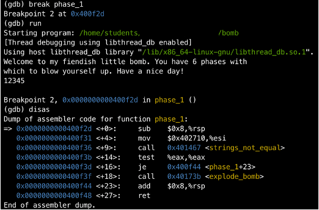
- 观察到调用了一个
strings_not_equal函数，根据函数名，其功能很可能是比较输入字符和正确字符是否匹配的函数； - 在
strings_not_equal函数处设置断点，直接continue运行进入该函数； - 显示
strings_not_equal的汇编代码开始分析；
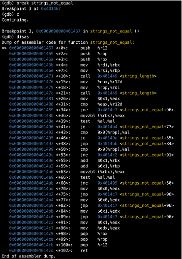
Note! %rdi
存放函数的第一个输入，%rsi
存放函数的第二个输入，%eax 存放函数的返回值。
- 观察到调用了
string_length函数，根据函数名，其功能很可能是获取输入字符数量的函数； - 在
string_length函数处设置断点，直接continue运行进入该函数； - 分析可得其先比较字符串长度，二者不相等则在
%eax中存 1 返回；若相等，则比较具体内容，若不相等则在%eax中存 1 返回； - 结合寄存器功能和汇编代码可以得到函数比较的字符串内容分别存放在
%rdi和%rsi中，分别打印寄存器的值如下：
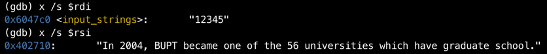
- 得到
%rdi存放的是我们输入的字符串，%rsi是目标字符串。函数中，%rsi的值被赋给%rbp，%rbp和%rdi上的字符串进行比较。所以phase_1需要我们输入与其相同的字符串即可通过。
第二阶段
- 在
phase_2入口处设置断点，运行程序，输入phase_1答案，进入阶段 2；同上操作得到汇编代码进行分析；
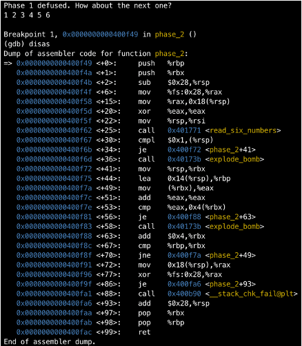
- 观察发现其调用
read_six_numbers函数，设置断点进入，显示该函数的汇编代码，观察到将地址$0x402a31存入%esi后调用scanf函数，打印该地址的值，验证了该函数的需要输入6个整数。也可以由下面的cmp语句得到，如果scanf的返回值小于等于5会触发爆炸。
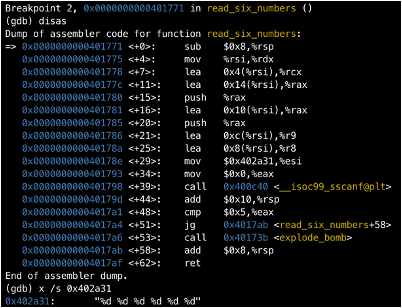
Note! %rsp
存放堆栈指针，括号表示获取地址上的值。%rbp
存放的是栈的基址。
- 继续回到
phase_2，由cmpl语句可见第一个输入的整数(%rsp存的地址上的值)需要 >= 1，将其存放到%eax上，并将其变为2倍后继续存在%eax，再与输入的第二个整数比较，要求结果相等，否则触发爆炸。然后检查当前栈指针是否到达栈的基址%rbp，如果顺利到达则跳出，成功通过。 - 可以推测出
phase_2是一种循环结构，依次比较每个输入整数是否符合是前一个输入的2倍，推出一个答案为1 2 4 8 16 32。
第三阶段
- 同上操作，此处不再赘述，进入
phase_3并得到汇编代码如下：
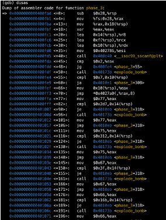
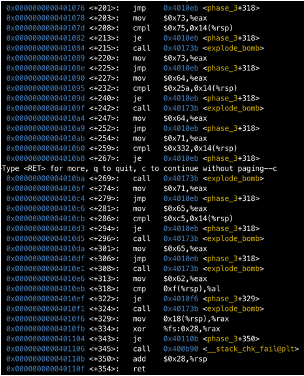
- 第三阶段代码较为冗长，先通过打印
scanf函数的调用值得到输入格式为两个整数和一个字符。
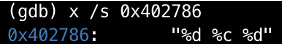
- 分析在
0x400fe4处的cmpl $0x7, 0x10(%rsp)指令以及下一条指令ja 0x4010ef，得出0x10(%rsp)处的值，即输入的第一个整数（占 24 = 0x10 个字节） ≤ 7。 0x400ff3处的指令jmpq \*0x4027a0(,%rax,8)表示跳转到0x4027a0+输入的第一个整数 *8所存储的地址处，打印出所有可能的跳转地址如下：
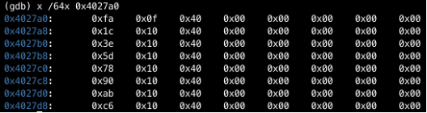
Note！* 表示间接跳转，0x4027a0
是一个基地址（立即数），语句应跳转到计算得到的地址上存的地址值。
- 此时，再结合
phase_3整体代码，进行拆分，可以推测其为switch分支结构，选择case 0进行分析。（每个case结构都基本相同）：
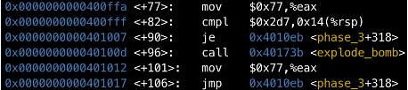
- 分析可得，首先比较输入的第二个整数与
0x2d7（727），相等则跳至4010eb <+318>: cmp 0xf(%rsp),%al，将输入的字符与%al (0x77)，对应 ASCII 码w比较，相等则通过。
Note！%al 和 %eax
为同一个寄存器，%al 是 %rax 寄存器的最低 8
位。%eax 是低 32 位。
- 以此类推，得到所有可能答案如下：
| 第一个整数 | 字符 | 第二个整数 |
|---|---|---|
| 0 | w | 727 |
| 1 | u | 786 |
| 2 | g | 63 |
| 3 | f | 363 |
| 4 | s | 117 |
| 5 | d | 602 |
| 6 | q | 818 |
| 7 | e | 197 |
第四阶段
- 同上操作，此处不再赘述，进入 phase_4 并得到汇编代码如下。
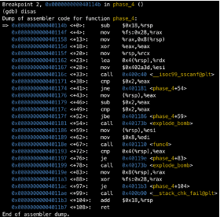
- 先通过打印
scanf函数的调用值得到输入格式为两个整数。
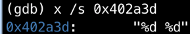
- 发现
phase_4调用了func4函数，在这之前，先检查了输入是否为2个整数，再将第二个输入的整数赋给%eax，减2后和2比较大小，如果小于等于2则继续。得到第二个整数 <= 4。 - 在进入函数之前，观察得到
%esi（第二个输入的整数）和%rdi (8)作为参数被传入func4。 - 进入函数，打印其汇编代码如下：
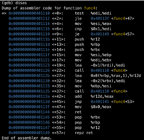
- 大致观察即可发现其为递归函数，分析汇编指令画出大致流程图如下：
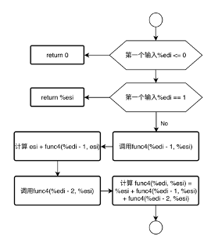
- 分析得到递归函数如下：
func4(n, x) = x + func4(n – 1, x) + func4(n – 2, x), n > 1；func4(1, x) = x, func4(0, x) = 0。 - 如果第二个输入为2，那么可以推出
func4(8, 2) = 108，再根据函数结束后中cmp 0x4(%rsp),%eax可以判断返回值需要和第一个输入相等，所以一个答案为108 2。
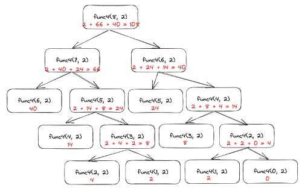
第五阶段
- 同上操作，此处不再赘述，进入
phase_5并得到汇编代码如下：
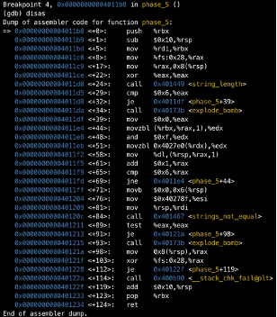
- 同样发现其调用
strings_length函数，由第一阶段分析可知，输入的字符串长度应为6。并且函数尾部调用strings_not_equal函数，比较输入字符串（%rdi）和目标字符串（%rsi）是否相等。 - 由
0x401204 <+76>: mov $0x40278f,%esi语句可知目标字符串的地址，打印内容可得：
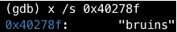
- 再分析中间对字符串的操作部分。先将输入字符串存入
%rbx中，然后通过指令movzbl (%rbx,%rax,1),%edx取出输入字符的第一位存到%edx中。
Note! movzbl 从源操作数读取一个 8
位值，并将其扩展到 32 位，填充高 24
位为零，然后存入目标寄存器。
Note!
(%rbx, %rax, 1)是内存地址的计算方式，表示从
(%rbx + %rax * 1) 地址处读取一个字节的数据。其中
%rbx 是基地址寄存器，%rax
是索引寄存器，1是偏移量。
- 对于取出的字符，执行
and $0xf,%edx，分析可得其作用是将其低四位保留下来，其余位清零。 - 接着执行
movzbl 0x4027e0(%rdx),%edx，表示从0x4027e0 + %rdx处取出 1 字节数据扩展后存储 到%edx中，然后将%dl中的数据存储在(%rbx + %rax \* 1)处； - 上述操作重复 6 次直到
%rax等于 6，即字符串操作完毕。 - 打印
0x4027e0上的内容：
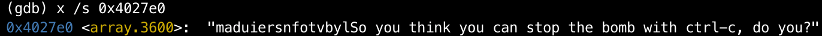
分析可得，该阶段是在
0x4027e0处挑选第%rdx个字符，然后这些挑选出的字符组合成一个字符串，即目标字符串bruins；但是我们要进行的是解密操作，
bruins在密钥中对应的索引为13，6，3，4，8，7，所以只需要输入的字符的低四位符合对应的索引即可，一个答案是MFCDHG。简述一下
phase_6和secret_phase，两者都涉及到对自定义结构体的操作，phase_6是对链表按照数据大小进行重排，而secret_phase是一个二叉搜索树。
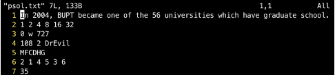
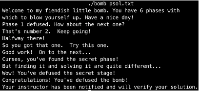